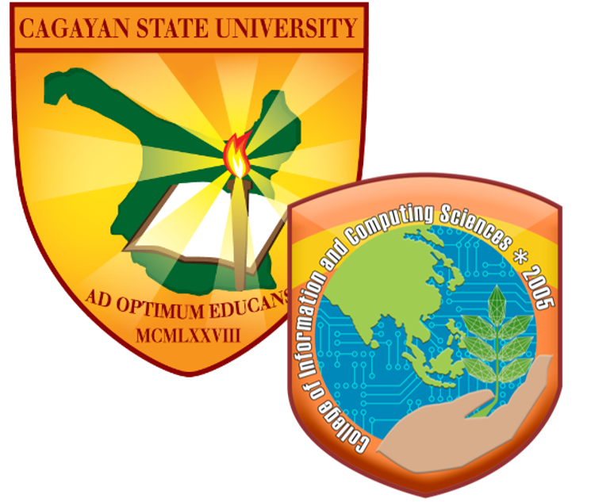

Cagayan State University
College of Information and Computing Sciences
"Proficient, Competent and Committed"

Information technology (IT) is the use of technology to manage, store, process, and transmit information. It encompasses a wide range of technologies and tools, including computer hardware and software, networking, databases, the internet, and more. IT is used to support a variety of activities and functions, such as communication, research, data analysis, and decision-making. IT is also used to support the operations and management of organizations, including businesses, governments, and non-profits. Additionally, IT is a rapidly growing and ever-evolving field, with new technologies and innovations constantly emerging. It plays a critical role in many aspects of modern society, including education, healthcare, transportation, and entertainment.
BACHELOR OF SCIENCE IN INFORMATION TECHNOLOGY


A leader in fisheries industry, this campus prides itself in conducting aquamarine researches generating various technologies in fisheries for the past 30 years
CSU Aparri was chosen by the World Bank together with other 7 universities in the Philippines, to be a regional institute for fisheries technology.
We at the College of Infomation and Computing Science are dedicated to norture our students to become I.T Professionals. Proficient, Committed and Globally Competent graduates through excellent instruction, innovative and creative research, responsive public service and productive industry and community engagement.
CSU is a University with global stature in the arts, culture, agriculture and fisheries, the sciences as well as technological and professional fields.
Cagayan State University shall produce globally competent graduates through excellent instruction, innovative and creative research, responsive public service and productive industry and community engagement.
CSU is a University with global stature in the arts, culture, agriculture and fisheries, the sciences as well as technological and professional fields.
Cagayan State University shall produce globally competent graduates through excellent instruction, innovative and creative research, responsive public service and productive industry and community engagement.


.png)